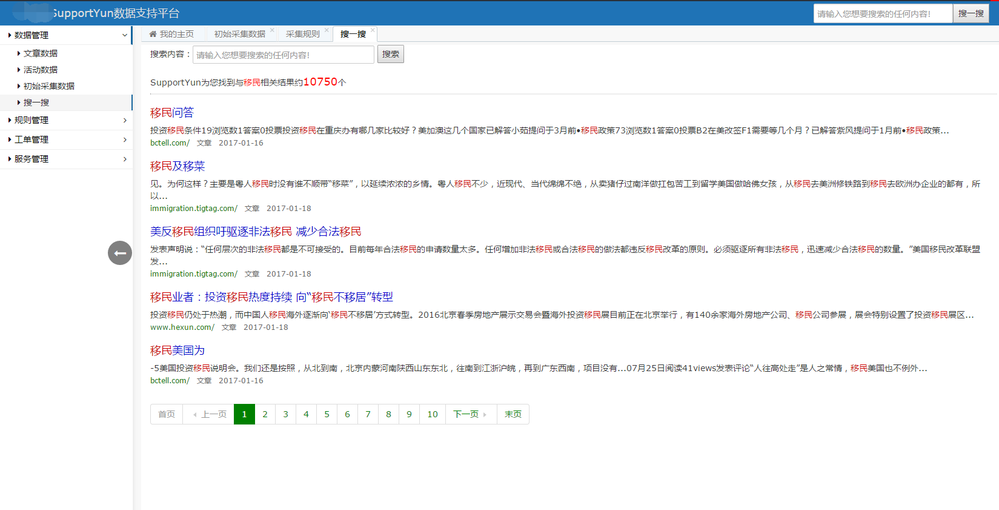
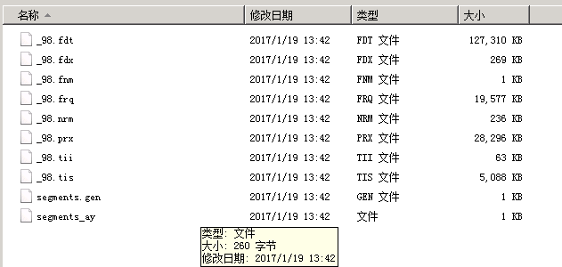
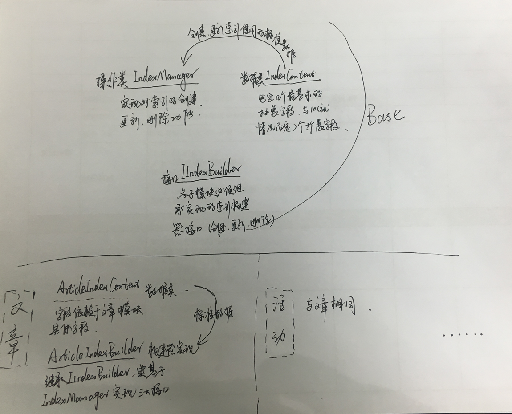

原文连接:https://www.cnblogs.com/liujianshe1990-/p/11690881.html
实现效果：
上一篇文章有附全文搜索结果的设计图，下面截一张开发完成上线后的实图：

基本风格是模仿的百度搜索结果，绿色的分页略显小清新。
目前已采集并创建索引的文章约3W多篇，索引文件不算太大，查询速度非常棒。

刀不磨要生锈，人不学要落后。每天都要学一些新东西。
基本技术介绍：
还记得上一次做全文搜索是在2013年，主要核心设计与代码均是当时的架构师写的，自己只能算是全程参与。
当时使用的是经典搭配：盘古分词+Lucene.net。
前几篇文章有说到，盘古分词已经很多年不更新了，我在SupportYun系统一直引用的JieBaNet来做分词技术。
那么是否也有成型的JieBaNet+Lucene.Net的全文搜索方案呢？
经过多番寻找，在GitHub上面找到一个简易的例子：https://github.com/anderscui/jiebaForLuceneNet
博主下面要讲的实现方案就是从这个demo得到的启发，大家有兴趣可以去看看这个demo。
博主使用的具体版本：Lucene.net 3.0.3.0 ，JieBaNet 0.38.3.0(做过简易的调整与扩展，前面文章有讲到)
首先我们对Lucene.Net的分词器Tokenizer、分析器Analyzer做一个基于JieBaNet的扩展。
1.基于LuceneNet扩展的JieBa分析器JiebaForLuceneAnalyzer

1 /// <summary>
2 /// 基于LuceneNet扩展的JieBa分析器
3 /// </summary>
4 public class JiebaForLuceneAnalyzer : Analyzer
5 {
6 protected static readonly ISet<string> DefaultStopWords = StopAnalyzer.ENGLISH_STOP_WORDS_SET;
7
8 private static ISet<string> StopWords;
9
10 static JiebaForLuceneAnalyzer()
11 {
12 StopWords = new HashSet<string>();
13 var stopWordsFile = Path.GetFullPath(JiebaNet.Analyser.ConfigManager.StopWordsFile);
14 if (File.Exists(stopWordsFile))
15 {
16 var lines = File.ReadAllLines(stopWordsFile);
17 foreach (var line in lines)
18 {
19 StopWords.Add(line.Trim());
20 }
21 }
22 else
23 {
24 StopWords = DefaultStopWords;
25 }
26 }
27
28 public override TokenStream TokenStream(string fieldName, TextReader reader)
29 {
30 var seg = new JiebaSegmenter();
31 TokenStream result = new JiebaForLuceneTokenizer(seg, reader);
32 result = new LowerCaseFilter(result);
33 result = new StopFilter(true, result, StopWords);
34 return result;
35 }
36 }2.基于LuceneNet扩展的JieBa分词器：JiebaForLuceneTokenizer
1 /// <summary>
2 /// 基于Lucene的JieBa分词扩展
3 /// </summary>
4 public class JiebaForLuceneTokenizer:Tokenizer
5 {
6 private readonly JiebaSegmenter segmenter;
7 private readonly ITermAttribute termAtt;
8 private readonly IOffsetAttribute offsetAtt;
9 private readonly ITypeAttribute typeAtt;
10
11 private readonly List<Token> tokens;
12 private int position = -1;
13
14 public JiebaForLuceneTokenizer(JiebaSegmenter seg, TextReader input):this(seg, input.ReadToEnd()) { }
15
16 public JiebaForLuceneTokenizer(JiebaSegmenter seg, string input)
17 {
18 segmenter = seg;
19 termAtt = AddAttribute<ITermAttribute>();
20 offsetAtt = AddAttribute<IOffsetAttribute>();
21 typeAtt = AddAttribute<ITypeAttribute>();
22
23 var text = input;
24 tokens = segmenter.Tokenize(text, TokenizerMode.Search).ToList();
25 }
26
27 public override bool IncrementToken()
28 {
29 ClearAttributes();
30 position++;
31 if (position < tokens.Count)
32 {
33 var token = tokens[position];
34 termAtt.SetTermBuffer(token.Word);
35 offsetAtt.SetOffset(token.StartIndex, token.EndIndex);
36 typeAtt.Type = "Jieba";
37 return true;
38 }
39
40 End();
41 return false;
42 }
43
44 public IEnumerable<Token> Tokenize(string text, TokenizerMode mode = TokenizerMode.Search)
45 {
46 return segmenter.Tokenize(text, mode);
47 }
48 }理想如果不向现实做一点点屈服，那么理想也将归于尘土。
实现方案设计：
我们做全文搜索的设计时一定会考虑的一个问题就是：我们系统是分很多模块的，不同模块的字段差异很大，怎么才能实现同一个索引，既可以单个模块搜索又可以全站搜索，甚至按一些字段做条件来搜索呢？
这些也是SupportYun系统需要考虑的问题，因为目前的数据就天然的拆分成了活动、文章两个类别，字段也大有不同。博主想实现的是一个可以全站搜索（结果包括活动、文章），也可以在文章栏目/活动栏目分别搜索，并且可以按几个指定字段来做搜索条件。
要做一个这样的全文搜索功能，我们需要从程序设计上来下功夫。下面就介绍一下博主的设计方案：
一、索引创建

1.我们设计一个IndexManager来处理最基本的索引创建、更新、删除操作。
 View Code
View Code2.创建、更新使用到的标准数据类：IndexContent。
我们设计TableName（对应DB表名）、RowId（对应DB主键）、CollectTime（对应DB数据创建时间）、ModuleType（所属系统模块）、Title（检索标题）、IndexTextContent（检索文本）等六个基础字段，所有模块需要创建索引必须构建该6个字段（大家可据具体情况扩展）。
然后设计10个预留字段Tag1-Tag10，用以兼容各大模块其他不同字段。
预留字段的存储、索引方式可独立配置。
View Code其中BaseIndexContent含有六个基础字段。
3.创建一个子模块索引构建器的接口：IIndexBuilder。
各子模块通过继承实现IIndexBuilder，来实现索引的操作。
View Code4.下面我们以活动模块为例，来实现索引创建。
a）首先创建一个基于活动模块的数据类：ActivityIndexContent，可以将我们需要索引或存储的字段都设计在内。
View Codeb）我们再创建ActivityIndexBuilder并继承IIndexBuilder，实现其创建、更新、删除方法。
View Code代码就不解释了，很简单。主要就是调用IndexManager来执行操作。
我们只需要在需要创建活动数据索引的业务点，构建ActivityIndexBuilder对象，并构建ActivityIndexContent集合作为参数，调用BuildIndex方法即可。
二、全文搜索
全文搜索我们采用同样的设计方式。
1.设计一个抽象的搜索类：BaseIndexSearch，所有搜索模块（包括全站）均需继承它来实现搜索效果。
1 public abstract class BaseIndexSearch<TIndexSearchResultItem>
2 where TIndexSearchResultItem : IndexSearchResultItem
3 {
4 /// <summary>
5 /// 索引存储目录
6 /// </summary>
7 private static readonly string IndexStorePath = ConfigurationManager.AppSettings["IndexStorePath"];
8 private readonly string[] fieldsToSearch;
9 protected static readonly SimpleHTMLFormatter formatter = new SimpleHTMLFormatter("<em>", "</em>");
10 private static IndexSearcher indexSearcher = null;
11
12 /// <summary>
13 /// 索引内容命中片段大小
14 /// </summary>
15 public int FragmentSize { get; set; }
16
17 /// <summary>
18 /// 构造方法
19 /// </summary>
20 /// <param name="fieldsToSearch">搜索文本字段</param>
21 protected BaseIndexSearch(string[] fieldsToSearch)
22 {
23 FragmentSize = 100;
24 this.fieldsToSearch = fieldsToSearch;
25 }
26
27 /// <summary>
28 /// 创建搜索结果实例
29 /// </summary>
30 /// <returns></returns>
31 protected abstract TIndexSearchResultItem CreateIndexSearchResultItem();
32
33 /// <summary>
34 /// 修改搜索结果（主要修改tag字段对应的属性）
35 /// </summary>
36 /// <param name="indexSearchResultItem">搜索结果项实例</param>
37 /// <param name="content">用户搜索内容</param>
38 /// <param name="docIndex">索引库位置</param>
39 /// <param name="doc">当前位置内容</param>
40 /// <returns>搜索结果</returns>
41 protected abstract void ModifyIndexSearchResultItem(ref TIndexSearchResultItem indexSearchResultItem, string content, int docIndex, Document doc);
42
43 /// <summary>
44 /// 修改筛选器（各模块）
45 /// </summary>
46 /// <param name="filter"></param>
47 protected abstract void ModifySearchFilter(ref Dictionary<string, string> filter);
48
49 /// <summary>
50 /// 全库搜索
51 /// </summary>
52 /// <param name="content">搜索文本内容</param>
53 /// <param name="filter">查询内容限制条件,默认为null，不限制条件.</param>
54 /// <param name="fieldSorts">对字段进行排序</param>
55 /// <param name="pageIndex">查询结果当前页，默认为1</param>
56 /// <param name="pageSize">查询结果每页结果数，默认为20</param>
57 public PagedIndexSearchResult<TIndexSearchResultItem> Search(string content
58 , Dictionary<string, string> filter = null, List<FieldSort> fieldSorts = null
59 , int pageIndex = 1, int pageSize = 20)
60 {
61 try
62 {
63 if (!string.IsNullOrEmpty(content))
64 {
65 content = ReplaceIndexSensitiveWords(content);
66 content = GetKeywordsSplitBySpace(content,
67 new JiebaForLuceneTokenizer(new JiebaSegmenter(), content));
68 }
69 if (string.IsNullOrEmpty(content) || pageIndex < 1)
70 {
71 throw new Exception("输入参数不符合要求（用户输入为空，页码小于等于1）");
72 }
73
74 var stopWatch = new Stopwatch();
75 stopWatch.Start();
76
77 Analyzer analyzer = new JiebaForLuceneAnalyzer();
78 // 索引条件创建
79 var query = MakeSearchQuery(content, analyzer);
80 // 筛选条件构建
81 filter = filter == null ? new Dictionary<string, string>() : new Dictionary<string, string>(filter);
82 ModifySearchFilter(ref filter);
83 Filter luceneFilter = MakeSearchFilter(filter);
84
85 #region------------------------------执行查询---------------------------------------
86
87 TopDocs topDocs;
88 if (indexSearcher == null)
89 {
90 var dir = new DirectoryInfo(IndexStorePath);
91 FSDirectory entityDirectory = FSDirectory.Open(dir);
92 IndexReader reader = IndexReader.Open(entityDirectory, true);
93 indexSearcher = new IndexSearcher(reader);
94 }
95 else
96 {
97 IndexReader indexReader = indexSearcher.IndexReader;
98 if (!indexReader.IsCurrent())
99 {
100 indexSearcher.Dispose();
101 indexSearcher = new IndexSearcher(indexReader.Reopen());
102 }
103 }
104 // 收集器容量为所有
105 int totalCollectCount = pageIndex*pageSize;
106 Sort sort = GetSortByFieldSorts(fieldSorts);
107 topDocs = indexSearcher.Search(query, luceneFilter, totalCollectCount, sort ?? Sort.RELEVANCE);
108
109 #endregion
110
111 #region-----------------------返回结果生成-------------------------------
112
113 ScoreDoc[] hits = topDocs.ScoreDocs;
114 var start = (pageIndex - 1)*pageSize + 1;
115 var end = Math.Min(totalCollectCount, hits.Count());
116
117 var result = new PagedIndexSearchResult<TIndexSearchResultItem>
118 {
119 PageIndex = pageIndex,
120 PageSize = pageSize,
121 TotalRecords = topDocs.TotalHits
122 };
123
124 for (var i = start; i <= end; i++)
125 {
126 var scoreDoc = hits[i - 1];
127 var doc = indexSearcher.Doc(scoreDoc.Doc);
128
129 var indexSearchResultItem = CreateIndexSearchResultItem();
130 indexSearchResultItem.DocIndex = scoreDoc.Doc;
131 indexSearchResultItem.ModuleType = doc.Get("ModuleType");
132 indexSearchResultItem.TableName = doc.Get("TableName");
133 indexSearchResultItem.RowId = Guid.Parse(doc.Get("RowId"));
134 if (!string.IsNullOrEmpty(doc.Get("CollectTime")))
135 {
136 indexSearchResultItem.CollectTime = DateTime.Parse(doc.Get("CollectTime"));
137 }
138 var title = GetHighlighter(formatter, FragmentSize).GetBestFragment(content, doc.Get("Title"));
139 indexSearchResultItem.Title = string.IsNullOrEmpty(title) ? doc.Get("Title") : title;
140 var text = GetHighlighter(formatter, FragmentSize)
141 .GetBestFragment(content, doc.Get("IndexTextContent"));
142 indexSearchResultItem.Content = string.IsNullOrEmpty(text)
143 ? (doc.Get("IndexTextContent").Length > 100
144 ? doc.Get("IndexTextContent").Substring(0, 100)
145 : doc.Get("IndexTextContent"))
146 : text;
147 ModifyIndexSearchResultItem(ref indexSearchResultItem, content, scoreDoc.Doc, doc);
148 result.Add(indexSearchResultItem);
149 }
150 stopWatch.Stop();
151 result.Elapsed = stopWatch.ElapsedMilliseconds*1.0/1000;
152
153 return result;
154
155 #endregion
156 }
157 catch (Exception exception)
158 {
159 LogUtils.ErrorLog(exception);
160 return null;
161 }
162 }
163
164 private Sort GetSortByFieldSorts(List<FieldSort> fieldSorts)
165 {
166 if (fieldSorts == null)
167 {
168 return null;
169 }
170 return new Sort(fieldSorts.Select(fieldSort => new SortField(fieldSort.FieldName, SortField.FLOAT, !fieldSort.Ascend)).ToArray());
171 }
172
173 private static Filter MakeSearchFilter(Dictionary<string, string> filter)
174 {
175 Filter luceneFilter = null;
176 if (filter != null && filter.Keys.Any())
177 {
178 var booleanQuery = new BooleanQuery();
179 foreach (KeyValuePair<string, string> keyValuePair in filter)
180 {
181 var termQuery = new TermQuery(new Term(keyValuePair.Key, keyValuePair.Value));
182 booleanQuery.Add(termQuery, Occur.MUST);
183 }
184 luceneFilter = new QueryWrapperFilter(booleanQuery);
185 }
186 return luceneFilter;
187 }
188
189 private Query MakeSearchQuery(string content, Analyzer analyzer)
190 {
191 var query = new BooleanQuery();
192 // 总查询参数
193 // 属性查询
194 if (!string.IsNullOrEmpty(content))
195 {
196 QueryParser parser = new MultiFieldQueryParser(Version.LUCENE_30, fieldsToSearch, analyzer);
197 Query queryObj;
198 try
199 {
200 queryObj = parser.Parse(content);
201 }
202 catch (ParseException parseException)
203 {
204 throw new Exception("在FileLibraryIndexSearch中构造Query时出错。", parseException);
205 }
206 query.Add(queryObj, Occur.MUST);
207 }
208 return query;
209 }
210
211 private string GetKeywordsSplitBySpace(string keywords, JiebaForLuceneTokenizer jiebaForLuceneTokenizer)
212 {
213 var result = new StringBuilder();
214
215 var words = jiebaForLuceneTokenizer.Tokenize(keywords);
216
217 foreach (var word in words)
218 {
219 if (string.IsNullOrWhiteSpace(word.Word))
220 {
221 continue;
222 }
223
224 result.AppendFormat("{0} ", word.Word);
225 }
226
227 return result.ToString().Trim();
228 }
229
230 private string ReplaceIndexSensitiveWords(string str)
231 {
232 str = str.Replace("+", "");
233 str = str.Replace("+", "");
234 str = str.Replace("-", "");
235 str = str.Replace("-", "");
236 str = str.Replace("!", "");
237 str = str.Replace("！", "");
238 str = str.Replace("(", "");
239 str = str.Replace(")", "");
240 str = str.Replace("（", "");
241 str = str.Replace("）", "");
242 str = str.Replace(":", "");
243 str = str.Replace("：", "");
244 str = str.Replace("^", "");
245 str = str.Replace("[", "");
246 str = str.Replace("]", "");
247 str = str.Replace("【", "");
248 str = str.Replace("】", "");
249 str = str.Replace("{", "");
250 str = str.Replace("}", "");
251 str = str.Replace("{", "");
252 str = str.Replace("}", "");
253 str = str.Replace("~", "");
254 str = str.Replace("~", "");
255 str = str.Replace("*", "");
256 str = str.Replace("*", "");
257 str = str.Replace("?", "");
258 str = str.Replace("？", "");
259 return str;
260 }
261
262 protected Highlighter GetHighlighter(Formatter formatter, int fragmentSize)
263 {
264 var highlighter = new Highlighter(formatter, new Segment()) { FragmentSize = fragmentSize };
265 return highlighter;
266 }
267 }几个protected abstract方法，是需要继承的子类来实现的。
其中为了实现搜索结果对命中关键词进行高亮显示，特引用了盘古分词的Highlighter。原则是此处应该是参照盘古分词的源码，自己使用JieBaNet来做实现的，由于工期较紧，直接引用了盘古。
2.我们设计一个IndexSearchResultItem，表示搜索结果的基类。
View Code3.我们来看看具体的实现，先来看全站搜索的SearchService
1 public class IndexSearch : BaseIndexSearch<IndexSearchResultItem>
2 {
3 public IndexSearch()
4 : base(new[] { "IndexTextContent", "Title" })
5 {
6 }
7
8 protected override IndexSearchResultItem CreateIndexSearchResultItem()
9 {
10 return new IndexSearchResultItem();
11 }
12
13 protected override void ModifyIndexSearchResultItem(ref IndexSearchResultItem indexSearchResultItem, string content,
14 int docIndex, Document doc)
15 {
16 //不做修改
17 }
18
19 protected override void ModifySearchFilter(ref Dictionary<string, string> filter)
20 {
21 //不做筛选条件修改
22 }
23 }是不是非常简单。由于我们此处搜索的是全站，结果展示直接用基类，取出基本字段即可。
4.再列举一个活动的搜索实现。
a）我们首先创建一个活动搜索结果类ActivityIndexSearchResultItem，继承自结果基类IndexSearchResultItem
View Codeb）然后创建活动模块的搜索服务：ActivityIndexSearch，同样需要继承BaseIndexSearch，这时候ActivityIndexSearch只需要相对全站搜索修改几个参数即可。
1 public class ActivityIndexSearch: BaseIndexSearch<ActivityIndexSearchResultItem>
2 {
3 public ActivityIndexSearch()
4 : base(new[] { "IndexTextContent", "Title" })
5 {
6 }
7
8 protected override ActivityIndexSearchResultItem CreateIndexSearchResultItem()
9 {
10 return new ActivityIndexSearchResultItem();
11 }
12
13 protected override void ModifyIndexSearchResultItem(ref ActivityIndexSearchResultItem indexSearchResultItem, string content,
14 int docIndex, Document doc)
15 {
16 indexSearchResultItem.ActivityTypes = doc.Get("Tag1");
17 indexSearchResultItem.Url = doc.Get("Tag2");
18 indexSearchResultItem.SourceName = doc.Get("Tag3");
19 indexSearchResultItem.SourceOfficialHotline = doc.Get("Tag4");
20 indexSearchResultItem.SourceUrl = doc.Get("Tag5");
21 indexSearchResultItem.CityId=new Guid(doc.Get("Tag6"));
22 indexSearchResultItem.Address = doc.Get("Tag7");
23 indexSearchResultItem.ActivityDate = doc.Get("Tag8");
24 }
25
26 protected override void ModifySearchFilter(ref Dictionary<string, string> filter)
27 {
28 filter.Add("ModuleType", "活动");
29 }
30 }筛选条件加上模块=活动，返回结果数据类指定，活动特有字段返回赋值。
业务调用就非常简单了。
全站全文搜索：我们直接new IndexSearch()，然后调用其Search()方法
活动全文搜索：我们直接new ActivityIndexSearch()，然后调用其Search()方法
Search()方法几个参数：
///<param name="content">搜索文本内容</param>
/// <param name="filter">查询内容限制条件,默认为null，不限制条件.</param>
/// <param name="fieldSorts">对字段进行排序</param>
/// <param name="pageIndex">查询结果当前页，默认为1</param>
/// <param name="pageSize">查询结果每页结果数，默认为20</param>
如果我们用软能力而不是用技术能力来区分程序员的好坏 – 是不是有那么点反常和变态。